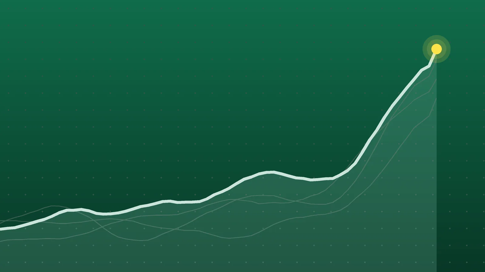

SportsExplainer
La Liga Scores, Oct. 24: Álvarez Lifts Atlético Past Deportivo
Atlético moved within two points of Barcelona before Sunday’s Clásico, while Valencia stayed in the bottom three after a stoppage-time loss with both teams down to 10 men.

Quick take
- Julián Álvarez scored early in the second half, set up by Alejandro Grimaldo, as Atlético Madrid beat Deportivo 1-0 to sit two points behind leader Barcelona.
- Georges Mikautadze scored in the 96th minute as Villarreal came from behind to win 2-1 at Valencia, a game that ended 10 against 10.
- Racing de Santander rallied from a goal down to beat Espanyol 2-1, with Yassir Zabiri scoring the winner in the 84th minute.
- Elche won 3-0 at Rayo Vallecano, with two of its goals coming from the penalty spot.
Why it's trending Four Matchday 10 games in La Liga on Saturday, Oct. 24, set the table for Sunday’s Barcelona-Real Madrid Clásico.
La Liga scores for Oct. 24
Atlético Madrid kept pace at the top of La Liga on Saturday, beating Deportivo de La Coruña 1-0 at the Metropolitano. Julián Álvarez scored the only goal shortly after halftime, and the win leaves Atlético two points behind leader Barcelona, AFP reported.
The wildest finish came at Mestalla. Valencia led Villarreal at halftime, then lost 2-1 on a goal six minutes into stoppage time, with each side playing a man short by the end. Racing de Santander and Elche also won on a Matchday 10 Saturday that set up Sunday’s Clásico between Barcelona and Real Madrid.
All final scores
| Winner | Score | Loser | Note |
|---|---|---|---|
| Elche (away) | 3-0 | Rayo Vallecano | Two penalties in the first half; Germán Valera added a third |
| Racing de Santander (home) | 2-1 | Espanyol | Came from behind; Yassir Zabiri scored the winner in the 84th minute |
| Villarreal (away) | 2-1 | Valencia | Georges Mikautadze won it in the 96th minute; one red card for each side |
| Atlético Madrid (home) | 1-0 | Deportivo de La Coruña | Julián Álvarez scored early in the second half |
All four games were completed. Kickoff order and referees come from LaLiga’s Matchday 10 schedule.
Álvarez delivers again for Atlético
The first half belonged to the visitors more than the hosts. Deportivo had much of the ball, and Jan Oblak had to stop a header from Loureiro, according to EFE’s report. It was 0-0 at the break.
Atlético struck soon after the restart. Alejandro Grimaldo slid a low ball across, and Álvarez finished at the far post, per the FOX Sports box score and AFP. It was his second goal in a row after he scored in a 1-1 Champions League draw at Stuttgart during the week.
Deportivo pushed late and nearly got a point. EFE said Kevin missed a clear chance to equalize. The Metropolitano crowd was 68,674.
A stoppage-time swing at Mestalla
Pepelu put Valencia ahead with a first-half penalty. Alex Freeman tied it for Villarreal in the 69th minute with a header that was first ruled out and then given after a video review, according to SI México.
Villarreal lost Pape Gueye to a straight red card, which SI said came for an elbow on José Gayà. Valencia then went down to 10 when substitute Harvey Elliott was sent off in the 89th minute. Brit Brief reported it was a second yellow, the first for a foul and the second for dissent. Valencia coach Javier Aguirre called it “an absurd, ridiculous sending-off,” according to Brit Brief, and said the blame was his.
Mikautadze’s 96th-minute goal handed Aguirre his first loss since taking over the club.
Racing turns it around
Espanyol went ahead through Edu Expósito in the 62nd minute at El Sardinero. Racing answered seven minutes later when Jeanuël Belocian scored from a Sergio Canales assist, and Zabiri won it in the 84th, set up by Álvaro Mantilla, La Nación reported. It was Zabiri’s eighth goal of the season, according to EFE.
Racing outshot Espanyol 23-11 and put nine on target to Espanyol’s one. EFE wrote that the loss raises questions about the future of Espanyol coach Manolo González.
In the early game, Federico Redondo (23rd minute) and Fer Niño (36th) scored penalties for Elche at Vallecas, and Valera added a third in the 68th. SofaScore reported that Rayo’s Pathé Ciss hit the crossbar with a penalty of his own in the 39th minute. Rayo had more of the ball, about 57%, but La Nación counted nine Elche shots on target to Rayo’s five.
What it means
Uptick’s count below adds Saturday’s results to LaLiga’s standings as they stood before kickoff. Barcelona, Real Madrid and Real Betis did not play Saturday, so their totals are unchanged.
| Pos. | Team | Played | Points |
|---|---|---|---|
| 1 | Barcelona | 9 | 27 |
| 2 | Atlético Madrid | 10 | 25 |
| 3 | Real Madrid | 9 | 21 |
| 4 | Real Betis | 9 | 19 |
| 5 | Real Sociedad | 9 | 16 |
Atlético went from 22 to 25 points, matching AFP’s two-point gap to the leaders. The catch is that Atlético have now played one more game than Barcelona and Real Madrid. Sunday’s Clásico can shift the picture three ways:
- Barcelona win: Barcelona 30, Atlético 25, Real Madrid 21. The lead grows to five points.
- Draw: Barcelona 28, Atlético 25, Real Madrid 22.
- Real Madrid win: Barcelona 27, Atlético 25, Real Madrid 24. The top three would be separated by three points.
At the bottom, Valencia have 6 points from 10 games and sit 19th, three behind Rayo Vallecano, who are 16th with 9. Málaga are last with 5 after 10 games. Espanyol stayed on 8 points in 18th, per La Nación. The two winners near the bottom both moved up: Racing climbed to 11 points and 11th, and Elche to 10 points and 12th. Villarreal’s win took them to 12 points and eighth place, according to SI México.
What’s next
Matchday 10 continues on Sunday, Oct. 25, with four games, according to LaLiga’s schedule:
- Athletic Club vs. Getafe
- Celta vs. Real Betis
- Real Sociedad vs. Levante
- Barcelona vs. Real Madrid, the last game of the day
Clocks in Spain go back an hour early Sunday, and the published kickoff times we found don’t agree on how they handle the change, so check local listings for start times. Racing’s next game is at home against Real Madrid, EFE noted.
Sources
- AFP via Yahoo Sports Alvarez fires Atletico to win against DeportivoOct. 24, 2026
- FOX Sports Atlético Madrid vs. Deportivo - Live Score - October 24, 2026Oct. 24, 2026
- EFE via Telemadrid 1-0. Julián Alvarez sale al rescate del Atlético ante el DeportivoOct. 24, 2026
- Sports Illustrated México Javier Aguirre sufre su primera derrota con el Valencia: Villarreal remonta y gana 2-1 en el descuentoOct. 24, 2026
- Brit Brief Valencia boss slams Elliott 'absurd' red card in Villarreal defeatOct. 24, 2026
- La Nación Racing de Santander venció 2-1 a Espanyol, por la Liga de EspañaOct. 24, 2026
- EFE via Diario de Santiago 2-1. Zabiri acaba con la crisis del Racing y compromete el futuro de Manolo GonzálezOct. 24, 2026
- SofaScore Elche beat Rayo Vallecano 3-0 in LaLiga: two pens and a keeper clinicOct. 24, 2026
- La Nación Elche venció 3-0 a Rayo Vallecano, por la Liga de EspañaOct. 24, 2026
- LaLiga Results of LALIGA EA SPORTS 2026/27Oct. 24, 2026
- LaLiga Standing of LALIGA EA SPORTS 2026/27Oct. 24, 2026
Keep reading

Bundesliga Scores, Oct. 24: Late Beier Goal Puts Dortmund on Top
Bundesliga scores for Oct. 24, 2026: Dortmund beat Frankfurt 1-0 to lead the table, Bremen won 3-2 at Mainz and Leipzig routed Elversberg 4-0.

Premier League Scores, Oct. 24: Villa End Man City’s Perfect Run
Premier League scores for Oct. 24, 2026: Aston Villa beat Man City 2-1, Arsenal topped Everton 2-0, Spurs won 2-0 at Chelsea and Fulham won 1-0 at Coventry.

Serie A Scores, Oct. 24: Lazio Go Top, Napoli and Roma Draw 3-3
Serie A scores for Oct. 24, 2026: Lazio beat Parma 2-1 to lead alone, Napoli and Roma drew 3-3, Como beat Sassuolo 2-0 and Bologna won 2-0 at Cagliari.